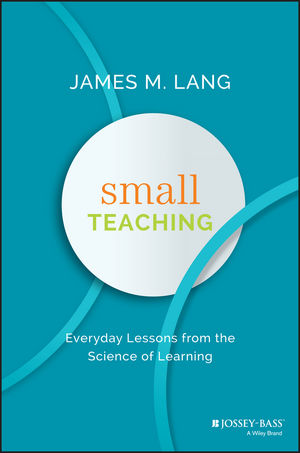

What We Don't Have (Yet)
- All teaching requires domain knowledge, general teaching knowledge, and pedagogical content knowledge (PCK)

- We don't have catalogs like these of how people misunderstand programming concepts – yet
| What is 37 + 15? | ||
| a) | 52 | Correct |
| b) | 42 | Threw away the '1' |
| c) | 412 | Treated each column independently |
| d) | 43 | Carried into the same column |

Next: Memory and Cognition